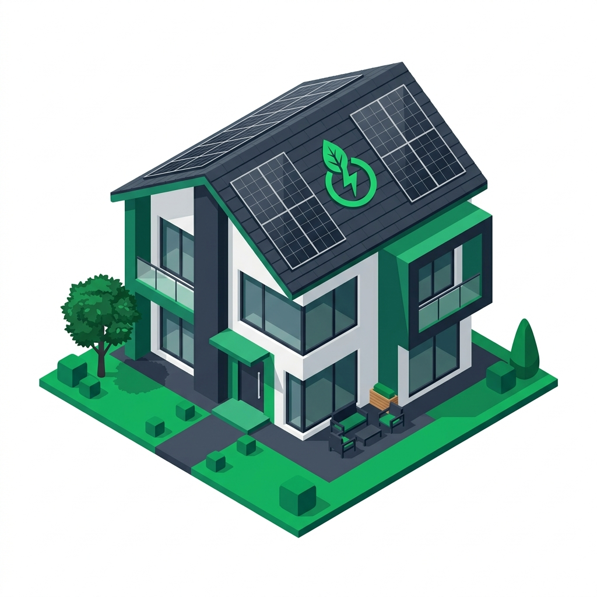
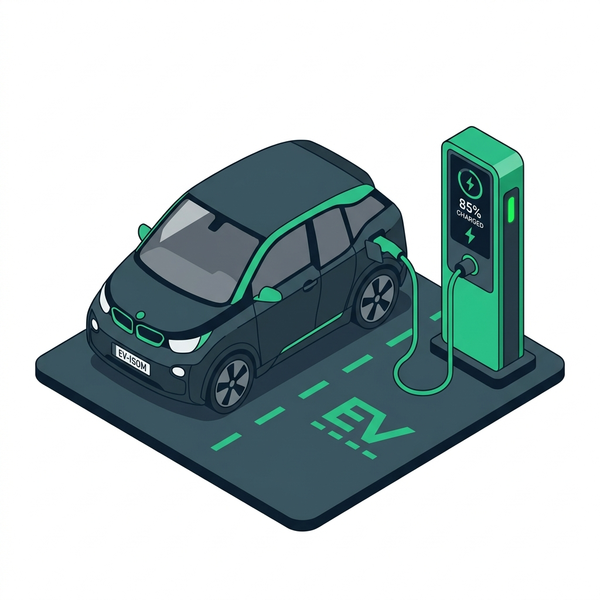
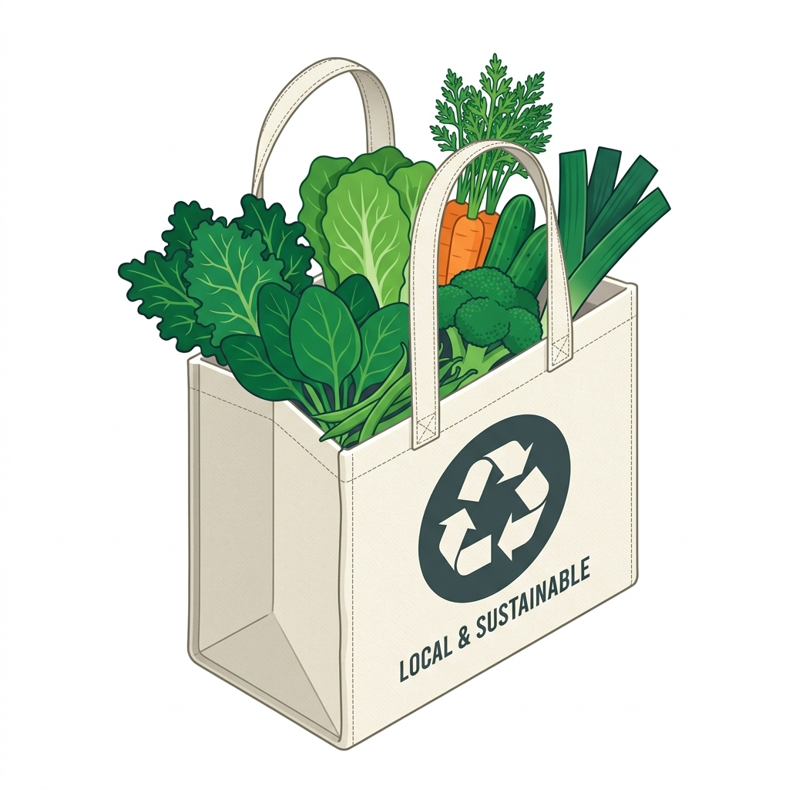
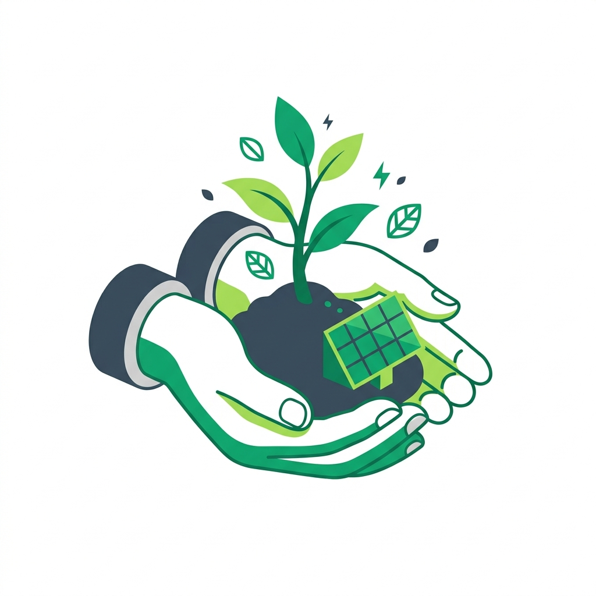
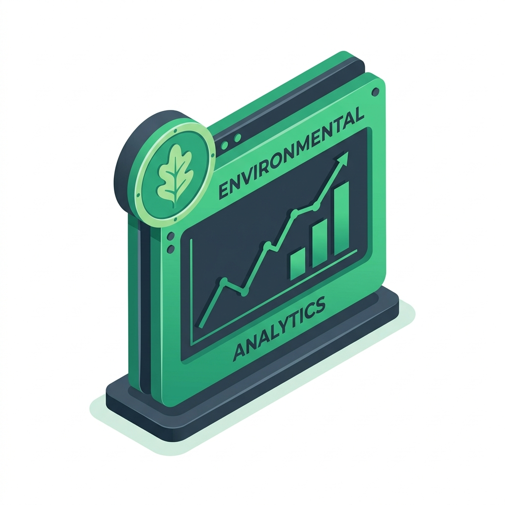

Créez votre profil d'évaluation
Adaptez les calculs, les facteurs d'émissions et le niveau de détail selon vos besoins.

Énergie et bâtiments
Les bâtiments représentent souvent 20 à 40 % de l'empreinte totale.

Transports et mobilité
La mobilité est souvent le premier ou deuxième poste d'émissions.

Alimentation et consommation
Vos choix de consommation et de déchets influencent le bilan carbone.
Pratiques sectorielles
Questions adaptées à votre domaine pour plus de précision.

Vos actions positives pour le territoire
Cochez les actions concrètes que vous mettez en œuvre pour réduire ou séquestrer du carbone.

Votre cockpit environnemental
Consultez votre empreinte et pilotez vos plans de réduction.
Répartition par poste
Mon plan d'action personnalisé
Sélectionnez les gestes que vous vous engagez à réaliser pour recalculer immédiatement votre potentiel d'impact.
Suivi historique et progression
Renseignez vos bilans précédents pour observer votre courbe de transition dans le temps.
| Année | Bilan (tCO₂e) | Description |
|---|